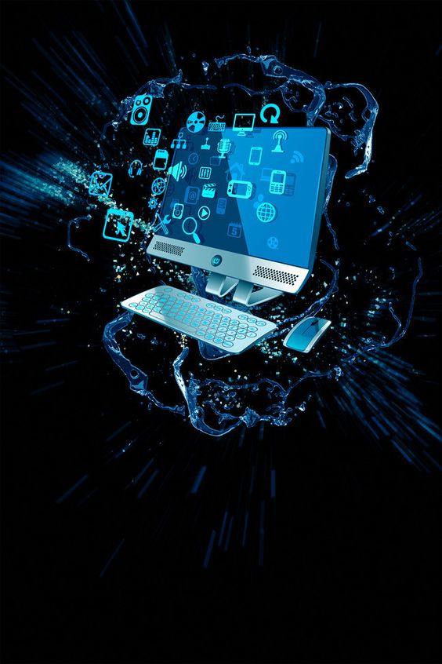
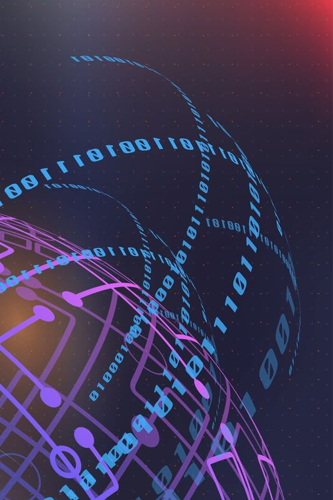
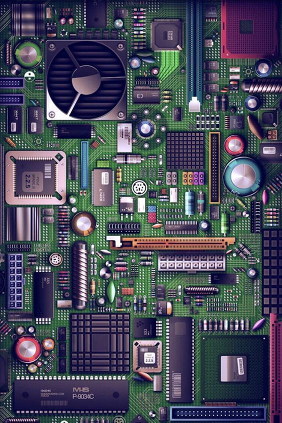
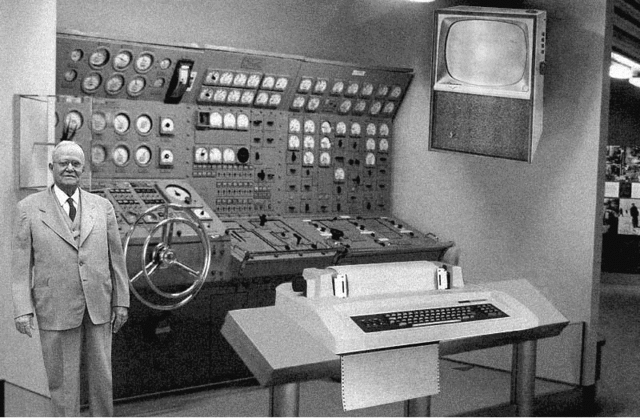
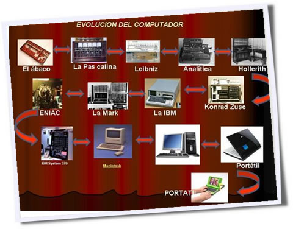
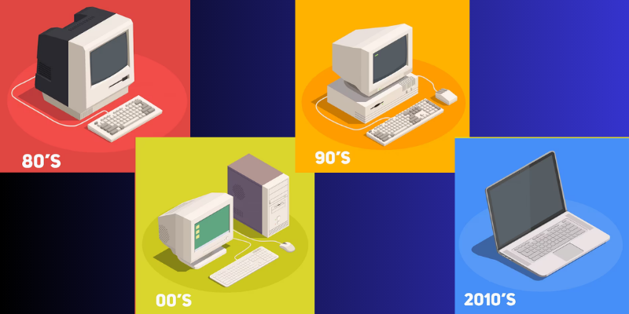

En este espacio dedicado a la investigación informática, nos sumergimos en el fascinante mundo de la
tecnología, explorando las fronteras del conocimiento y contribuyendo al desarrollo y avance de la
informática. Nuestra plataforma está diseñada para aquellos apasionados por la innovación, la resolución de
problemas y la constante búsqueda de soluciones creativas en el campo de la informática.
Misión:
Nos comprometemos a llevar a cabo investigaciones rigurosas que aborden desafíos actuales y futuros en el
ámbito informático. Nuestra misión es impulsar el conocimiento, descubrir nuevas posibilidades y contribuir
al progreso tecnológico que impacta directamente en la forma en que vivimos, trabajamos y nos conectamos en
el mundo digital.



Investigación Actual
1. Innovación Informática: La innovación informática ha destacado ante la llegada de una pandemia que
impuso
cambios en nuestras dinámicas de vida. En medio del aislamiento social necesario para contener a la
Covid-19, las tecnologías de la información y comunicación (TIC) resaltaron como plataformas de
conexión. El
estado actual de la informática gira alrededor de la creación de tecnologías, servicios y productos
centrados en las personas.
2. Tecnologías Emergentes: Durante el 2020, la innovación informática mostró sus beneficios al ofrecer
sus
plataformas digitales que mantuvieron activas las relaciones humanas. Creció la demanda en soluciones
basadas en HealthTech, eMarketing, eCommerce, blockchain, robots autónomos, drones, RPA y
ciberseguridad.
3. Transformación Digital: El III Estudio Smart Industry señala que tan solo en España, en 2020, se
incrementó al 70% las industrias con un Plan de Transformación Digital. Este estudio y un análisis de
Forrester Consulting, reafirman la necesidad de digitalizar procesos productivos e invertir en
innovación
informática con tecnologías 4.0.
4. Noticias Recientes: Algunas noticias recientes en el campo de la informática incluyen el desarrollo de
ChatGPT por Google, la inversión de Apple en su propio ChatGPT, y la presentación de nuevos ordenadores
MacBook Pro Mac mini por Apple.
5. Investigación Informática: La investigación informática consiste en analizar un problema y plantear
soluciones innovadoras, como un nuevo algoritmo, una nueva arquitectura, un nuevo protocolo de
seguridad,
una nueva forma de usar la informática en una organización, una herramienta innovadora, un caso de
estudio.
Publicaciones
1. Orígenes de la Informática: Los orígenes de la informática se remontan a la segunda mitad del siglo XX,
aunque la primera generación de computadoras se desarrolló entre 1951 y 1958. Estas primeras computadoras
funcionaban con válvulas, cilindros magnéticos e instrucciones internas. Eran ordenadores que funcionaban
muy lentamente, eran muy grandes y generaban mucho calor.

2. Precursores del Computador: Aunque hubo muchos precursores de los actuales sistemas informáticos, para
muchos especialistas la historia empieza con Charles Babbage (1792-1871), matemático e inventor inglés que
al principio del siglo XIX predijo muchas de las teorías en que se basan los actuales ordenadores.
3. Desarrollo del Computador: El desarrollo de la computadora a través de la historia ha tenido un impacto
significativo en nuestras actividades cotidianas. Sin embargo, el avance de la tecnología no se dio de
manera simultánea en todo el mundo. Fue en países como Inglaterra, otros de Europa, y Estados Unidos, de
donde provinieron la mayoría de los avances tecnológicos en materia de computación.

4. Generaciones y Tecnología: La tecnología informática ha tenido un efecto revolucionario en la vida diaria
del ciudadano de a pie. El ritmo de progreso que ha demostrado ninguna otra tecnología, ni antigua ni
moderna, ha alcanzado. En la actualidad, las redes de ordenadores personales se han convertido en algo
habitual y la potencia informática ha terminado por integrarse en minúsculos dispositivos portátiles.

Contacto
¿Tiene preguntas o comentarios? No dude en ponerse en contacto con nosotros...